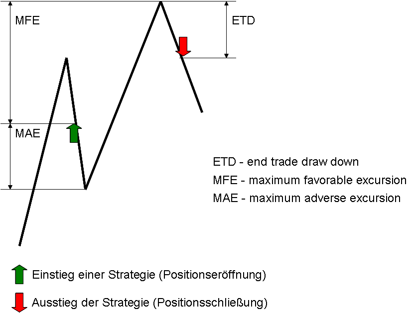

Strategieprogrammierung
Account
Beschreibung
Account ist ein Objekt, welches Informationen zu dem Konto enthält, mit dem die aktuelle Strategie arbeitet.
Die einzelnen Eigenschaften sind:
-
Account.AccountConnection Name der verwendeten Brokerverbindung (der Name, der unter Kontoverbindungen vergeben wurde).
-
Account.AccountType Art des Kontos (Livokonto, Simkonto usw.)
-
Account.Broker Bezeichnung des Brokers
-
Account.BuyingPower Der Kontostand unter Berücksichtigung des vom Broker gewährten Hebels.(IB hebelt das Kontoguthaben z.B. aktuell mit 4. Ein Guthaben von 10.000 Euro hat so eine "Kaufkraft" von 40.000 Euro.
-
Account.CashValue Betrag (double)
-
Account.Currency Währung, in der das Konto geführt wird
-
Account.ExcessEquity Überschuss
-
Account.InitialMargin Initial Margin (abh. vom jeweiligen Broker, double)
-
Account.InstrumentType Art des Handelsinstrumentes (Typ AgenaTrader.Plugins.InstrumentTypes)
-
Account.IsDemo true, wenn es sich um ein Demokonto handelt
-
Account.Name Name des Kontos (i.d.R. mit Account. AccountConnection identisch)
-
Account.OverNightMargin Übernacht-Margin (abh. vom jeweiligen Broker, double)
-
Account.RealizedProfitLoss realisierter Gewinn bzw. Verlust (double)
Beispiel
Print("AccountConnection " + Account.AccountConnection);
Print("AccountType " + Account.AccountType);
Print("Broker " + Account.Broker);
Print("BuyingPower " + Account.BuyingPower);
Print("CashValue " + Account.CashValue);
Print("Currency " + Account.Currency);
Print("ExcessEquity " + Account.ExcessEquity);
Print("InitialMargin " + Account.InitialMargin);
Print("InstrumentTypes " + Account.InstrumentTypes);
Print("IsDemo " + Account.IsDemo);
Print("Name " + Account.Name);
Print("OverNightMargin " + Account.OverNightMargin);
Print("RealizedProfitLoss " + Account.RealizedProfitLoss);
BarsCountFromTradeClose()
Beschreibung
Die Eigenschaft "BarsCountFromTradeClose" liefert die Anzahl der Bars, die seit dem letzten Ausstieg (Exit) aus dem Markt vergangen sind.
Verwendung
BarsCountFromTradeClose()
BarsCountFromTradeClose(string strategyName)
Für Multibar-Strategieen
BarsCountFromTradeClose(int multibarSeriesIndex, string strategyName, int exitsAgo)
Parameter
| strategyName | Der Signalname (string), der in einer Ausstiegsmethode zur eindeutigen Kennzeichnung des Ausstiegs vergeben wurde |
| multibarSeriesIndex | Für *Multibar*MultiBars Strategieen. Index der Datenreihe, für die die Ausstiegsorder ausgeführt wurde. Siehe ProcessingBarSeriesIndex. |
| exitsAgo | Anzahl der in der Vergangenheit liegenden Ausstiege. Eine 0 (Null) an dieser Stelle liefert die Anzahl der Bars, die sich nach dem letzten Ausstieg ausgebildet haben. |
Beispiel
Print("Der letzte Ausstieg liegt " + BarsCountFromTradeClose() + " Bars zurück.");
BarsCountFromTradeOpen()
Beschreibung
Die Eigenschaft "BarsCountFromTradeOpen" liefert die Anzahl der Bars, die seit dem letzten Einstieg (Entry) in den Markt vergangen sind.
Verwendung
BarsCountFromTradeOpen()
BarsCountFromTradeOpen(string strategyName)
Für Multibar-Strategieen
BarsCountFromTradeOpen(int multibarSeriesIndex, string strategyName, int entriesAgo)
Parameter
| strategyName | Der Signalname (string), der in einer Einstiegsmethode zur eindeutigen Kennzeichnung des Einstiegs vergeben wurde. |
| multibarSeriesIndex | Für *Multibar*, MultiBars Strategieen.Index der Datenreihe, für die die Einstiegsorder ausgeführt wurde. Siehe ProcessingBarSeriesIndex, ProcessingBarSeriesIndex. |
| entriesAgo | Anzahl der in der Vergangenheit liegenden Einstiege. Eine 0 (Null) an dieser Stelle liefert die Anzahl der Bars, die sich nach dem letzten Einstieg ausgebildet haben. |
Beispiel
Print("Der letzte Einstieg liegt " + BarsCountFromTradeOpen() + " Bars zurück.");
CancelAllOrders()
Beschreibung
CancelAllOrders löscht alle Oders (cancel), die von der Strategie verwaltet werden. Es wird ein Cancel-Request an den Broker verschickt. Ob eine Oder dort wirklich gelöscht wird, kann nicht garantiert werden. Es kann vorkommen, dass eine Order eine Teilausführung erhalten hat, ehe sie gelöscht wird. Es ist daher ratsam, den jeweils aktuellen Status einer Order mit OnOrderChanged() zu kontrollieren.
Verwendung
CancelAllOrders()
Parameter
kein Parameter
Beispiel
protected override void OnCalculate()
{
if (BarsCountFromTradeOpen() >= 30)
CancelAllOrders();
}
Order.Cancel()
Beschreibung
Cancel order löscht eine Oder (cancel).
Es wird ein Cancel-Request an den Broker verschickt. Ob eine Oder dort wirklich gelöscht wird, kann nicht garantiert werden. Es kann vorkommen, dass eine Order eine Teilausführung erhalten hat, ehe sie gelöscht wird. Es ist daher ratsam, den jeweils aktuellen Status einer Order mit OnOrderChanged() zu kontrollieren.
Verwendung
Order.Cancel(IOrder order)
Parameter
Ein order-Objekt vom Typ IOrder
Beispiel
private IOrder entryOrder = null;
private int barNumber = 0;
protected override void OnCalculate()
{
// An das Hoch des aktuellen Bars einen Einstiegsstop legen
if (entryOrder == null)
{
entryOrder = OpenLongStop(High[0], "stop long");
barNumber = ProcessingBarIndex;
}
// Nach 3 Bars die Order löschen
if (Position.PositionType == PositionType.Flat &&
ProcessingBarIndex > barNumber + 3)
Order.Cancel(entryOrder);
}
CreateIfDoneGroup()
Beschreibung
Wenn zwei Orders über eine CreateIfDoneGroup miteinander verknüpft werden, so bedeutet dies, dass wenn die eine Order ausgeführt wurde, die zweite verbundene Order aktiviert wird.
Verwendung
CreateIfDoneGroup(IEnumerable<IOrder> orders)
Parameter
Ein order-Objekt vom Typ IOrder als List
Beispiel
private IOrder oopenlong = null;
private IOrder osubmitbuy = null;
protected override void OnInit()
{
IsAutoConfirmOrder = false;
}
protected override void OnCalculate()
{
oopenlong = SubmitOrder(new StrategyOrderParameters
{
Direction = OrderDirection.Buy,
Type = OrderType.Market,
Quantity = DefaultOrderQuantity,
SignalName = "strategyName",
});
osubmitbuy = SubmitOrder(new StrategyOrderParameters
{
Direction = OrderDirection.Sell,
Type = OrderType.Stop,
Quantity = DefaultOrderQuantity,
StopPrice = Close[0] * 1.1,
SignalName = "strategyName",
});
CreateIfDoneGroup(new List<IOrder> { oopenlong, osubmitbuy });
oopenlong.ConfirmOrder();
}
CreateOCOGroup()
Beschreibung
Wenn zwei Orders über eine CreateOCOGroup miteinander verknüpft werden, so bedeutet dies, dass sobald die eine Order ausgeführt wurde, die zweite verbundene Order gelöscht wird.
Verwendung
CreateOCOGroup(IEnumerable<IOrder> orders)
Parameter
Ein order-Objekt vom Typ IOrder als List
Beispiel
private IOrder oopenlong = null;
private IOrder oEnterShort = null;
protected override void OnInit()
{
IsAutoConfirmOrder = false;
}
protected override void OnCalculate()
{
oopenlong = SubmitOrder(new StrategyOrderParameters
{
Direction = OrderDirection.Buy,
Type = OrderType.Stop,
Quantity = DefaultOrderQuantity,
StopPrice = Close[0] * 1.1,
SignalName = "strategyName",
});
oEnterShort = SubmitOrder(new StrategyOrderParameters
{
Direction = OrderDirection.Sell,
Type = OrderType.Stop,
Quantity = DefaultOrderQuantity,
StopPrice = Close[0] * -1.1,
SignalName = "strategyName",
});
CreateOCOGroup(new List<IOrder> { oopenlong, oEnterShort });
oopenlong.ConfirmOrder();
oEnterShort.ConfirmOrder();
}
CreateOROGroup()
Beschreibung
Wenn zwei Orders über eine CreateOROGroup miteinander verknüpft werden, so bedeutet dies, dass sobald die eine Order ausgeführt wurde, die Ordergröße der zweiten Order um das Ordervolumen der ersten Order reduziert wird.
Verwendung
CreateOROGroup(IEnumerable<IOrder> orders)
Parameter
Ein order-Objekt vom Typ IOrder
Beispiel
private IOrder oStopLong = null;
private IOrder oLimitLong = null;
protected override void OnInit()
{
IsAutoConfirmOrder = false;
}
protected override void OnCalculate()
{
oStopLong = SubmitOrder(new StrategyOrderParameters
{
Direction = OrderDirection.Buy,
Type = OrderType.Stop,
Quantity = DefaultOrderQuantity,
StopPrice = Close[0] * -1.1,
SignalName = "strategyName",
});
oLimitLong = SubmitOrder(new StrategyOrderParameters
{
Direction = OrderDirection.Buy,
Type = OrderType.Limit,
Quantity = DefaultOrderQuantity*0.5,
Price = Close[0] * 1.1,
SignalName = "strategyName",
});
CreateOROGroup(new List<IOrder> { oLimitLong, oStopLong });
}
DataSeriesConfigurable
DefaultOrderQuantity
Beschreibung
DefaultQuantity legt die in einer Strategie zu verwendende Stückzahl fest. DefaultQuantity wird in der OnInit()-Methode angegeben.
Verwendung
ReplaceOrder(IOrder iOrder, int quantity, double limitPrice, double stopPrice)
Parameter
ein int-Wert, der die Stückzahn (Aktien, Kontrakte usw.) enthält
Beispiel
protected override void OnInit()
{
DefaultOrderQuantity = 100;
}
EntriesPerDirection
Beschreibung
Die Eigenschaft EntriesPerDirection legt die maximal erlaubte Anzahl von Einstiegen in eine Richtung (long bzw. short) fest.
Ob dabei der Name des Einstiegssignals berücksichtigt werden soll oder nicht festgelegt.
EntriesPerDirection wird in der OnInit() -Methode angegeben.
Verwendung
EntriesPerDirection
Parameter
ein int-Wert für die max. erlaubte Anzahl von Einstiegen in eine Richtung
Beispiel
// Beispiel 1
// Wenn eine der beiden Einstiegsbedingungen zutrifft und eine Long-Position eröffnet wird,
// wird das jeweils andere Einstiegssignal ignoriert
protected override void OnInit()
{
EntriesPerDirection = 1;
}
protected override void OnCalculate()
{
if (CrossAbove(EMA(14), SMA(50), 1) && IsSerieRising(ADX(20)))
OpenLong("SMA cross entry");
}
// Beispiel 2
// Es wird für jedes unterschiedlich benannte Einstiegssignal eine Long-Position eröffnet
protected override void OnCalculate()
{
if (CrossAbove(EMA(14), SMA(50), 1) && IsSerieRising(ADX(20)))
OpenLong("EMACrossesSMA");
else if (CrossAbove (MACD(2,2,5), 0, 1))
OpenLong("MACDCross");
}
ExcludeTradeHistoryInBacktest
CloseLongTrade()
Beschreibung
CloseLongTrade erzeugt eine Sell-Order um eine Long Position zu schließen (zu verkaufen).
Siehe auch: SubmitOrder(), CloseShortTrade()
Verwendung
Siehe StrategyOrderParameters
Parameter
Siehe StrategyOrderParameters
Return Value
ein order-Objekt vom Typ IOrder
Beispiel
var order = CloseLongTrade(new StrategyOrderParameters
{
Type = OrderType.Market
});
ExitOnClose
ExitOnCloseSeconds
CloseShortTrade()
Beschreibung
CloseShortTrade erzeugt eine Buy-to-Cover Order um eine Short Position zu schließen (zu kaufen).
Siehe auch: SubmitOrder(), CloselongTrade()
Verwendung
Siehe StrategyOrderParameters
Parameter
Siehe StrategyOrderParameters
Rückgabewert
ein order-Objekt vom Typ IOrder
Example
var order = CloseShortTrade(new StrategyOrderParameters
{
Type = OrderType.Stop,
Quantity = quantity,
StopPrice = price
});
Account.GetValue()
Beschreibung
Account.GetValue() liefert Informationen über das Konto, für das die Strategie ausgeführt wird.
Siehe auch GetProfitLoss().
Verwendung
Account.GetValue(AccountItem accountItem)
Parameter
Mögliche Werte für accountItem sind
AccountItem.BuyingPower
AccountItem.CashValue
AccountItem.RealizedProfitLoss
Rückgabewert
ein double-Wert für das jeweilige AccountItem, Für historische Bars wird eine 0 (Null) zurückgegeben.
Beispiel
Print("The current account cash value is " + Account.GetValue(AccountItem.CashValue));
Print("The current account cash value with the leverage provided by the broker is " + Account.GetValue(AccountItem.BuyingPower));
Print("The current P/L already realized is " + Account.GetValue(AccountItem.RealizedProfitLoss));
GetEntries()
Beschreibung
Diese Datenserie wird für Conditions verwendet und zeigt mehrfache Einstiegspreise für Einstiegsorders an.
Verwendung
Überladung von programmierten Conditions für eine Short und Long Signal Anzeige.
Parameter
None
Rückgabewert
int
Beispiel
public class MyTestEntry : UserScriptedCondition
{
double _percentage = 100;
protected override void Initialize()
{
IsEntry = true;
IsStop = false;
IsTarget= false;
Add(new OutputDescriptor(Color.FromKnownColor(KnownColor.Black), "Occurred"));
Add(new OutputDescriptor(Color.FromArgb(255, 118, 222, 90), "Entry1"));
Add(new OutputDescriptor(Color.FromArgb(255, 118, 222, 90), "Entry2"));
Add(new OutputDescriptor(Color.FromArgb(255, 118, 222, 90), "Entry3"));
Overlay = true;
CalculateOnBarClose = true;
}
protected override void OnBarUpdate()
{
Calculate();
}
public override void Recalculate()
{
Calculate();
}
private void Calculate ()
{
if (TradeDirection == PositionType.Long)
{
Entry1.Set(Close[0] + 0.5);
Entry2.Set(Close[0] + 1);
Entry3.Set(Close[0] + 1.5);
}
else
{
Entry1.Set(Close[0] - 0.5);
Entry2.Set(Close[0] - 1);
Entry3.Set(Close[0] - 1.5);
}
}
#region Properties
[Browsable(false)]
[XmlIgnore()]
public DataSeries Occurred
{
get { return Values[0]; }
}
[Browsable(false)]
[XmlIgnore()]
public DataSeries Entry1
{
get { return Values[1]; }
}
[Browsable(false)]
[XmlIgnore()]
public DataSeries Entry2
{
get { return Values[2]; }
}
[Browsable(false)]
[XmlIgnore()]
public DataSeries Entry3
{
get { return Values[3]; }
}
public override IList<DataSeries> GetEntrys()
{
return new[] { Entry1, Entry2, Entry3 };
GetProfitLoss()
Beschreibung
GetProfitLoss() liefert den aktuell unrealisierten Gewinn bzw. Verlust einer laufenden Position.
Siehe auch Account.GetValue().
Usage
GetProfitLoss(int pLType);
Verwendung
Mögliche Werte für pLType sind
0 - Amount, P/L als Währungsbetrag
1 - Percent, P/L in Prozent
2 – Risk, P/L in Van Tharp R-Multiples www.vantharp.com
3 – P/L in Ticks
Rückgabewert
ein double-Wert für den unrealisierten Gewinn bzw. Verlust
Beispiel
Print("The current risk for the strategy " + this.Name + " is " + GetProfitLoss(1) + " " + Instrument.Currency);
Print("This equals "+ string.Format( "{0:F1} R.", GetProfitLoss(3)));
GetProfitLossAmount()
Beschreibung
GetProfitLossAmount() liefert den aktuell unrealisierten Gewinn bzw. Verlust einer laufenden Position als Währungsbetrag.
Siehe auch Account.GetValue().
Verwendung
GetProfitLossAmount(double profitLoss);
Parameter
Ein Objekt vom Typ double
Rückgabewert
ein double-Wert für den unrealisierten Gewinn bzw. Verlust
Beispiel
Print("the current P&L " + this.Name + " is " + GetProfitLossAmount(Position.OpenProfitLoss) + " " + Instrument.Currency);
GetProfitLossRisk()
Beschreibung
GetProfitLossRisk() liefert den aktuell unrealisierten Gewinn bzw. Verlust einer laufenden Position in R-Multiplen.
Siehe auch Account.GetValue().
Verwendung
GetProfitLossRisk();
Parameter
keine
Rückgabewert
ein double-Wert für denie R-Multiple
Beispiel
Print("the current P&L " + this.Name + " is " + string.Format( "{0:F1} R.", GetProfitLossRisk()));
GetScriptedCondition()
Beschreibung
Mit dieser Methode können Benutzer zwischen Skripte zu kommunizieren.
IsAutoConfirmOrder
Beschreibung
IsAutoConfirmOrder legt fest ob Orders automatisch aktiviert werden. IsAutoConfirmOrder wird in der OnInit()-Methode angegeben.
Ist IsAutoConfirmOrder = true, dann werden Orders automatisch aktiviert (Default). Wenn IsAutoConfirmOrder der Wert false zugewiesen wurde, dann muss die entsprechende Order mit order. ConfirmOrder() aktiviert werden.
Parameter
ein bool-Wert
Beispiel
protected override void OnInit()
{
IsAutoConfirmOrder = false;
}
Order
Beschreibung
IOrder ist ein Objekt, welches Informationen zu einer Order enthält, die aktuell von einer Strategie verwaltet wird.
Die einzelnen Eigenschaften sind:
-
Action Eine der vier möglichen Aktionen:
- OrderDirection.Buy
- OrderDirection.Sell
-
AveragePrice Der durchschnittliche Kauf- bzw. Verkaufspreis einer Position. Bei Positionen ohne Teilausführungen entspricht dies dem Einstiegskurs.
-
FilledQuantity Bei Teilausführungen ist Filled kleiner als Quantity
-
LimitPrice
-
Name Der eindeutige SignalName
-
OrderId Die eindeutige OrderId
-
OrderMode Eines der drei möglichen Optionen:
- OrderMode.Direct
- OrderMode.Dynamic
- OrderMode.Synthetic
-
OrderState Hiermit kann der aktuelle Zustand der Order abgefragt werden (siehe OnOrderExecution und OnOrderChanged)
- OrderState.Accepted
- OrderState.Cancelled
- OrderState.CancelRejected
- OrderState.FilledQuantity
- OrderState.PartFilled
- OrderState.PendingCancel
- OrderState.PendingReplace
- OrderState.PendingSubmit
- OrderState.Rejected
- OrderState.ReplaceRejected
- OrderState.Unknown
- OrderState.Working
-
OrderType Mögliche Orderarten:
- OrderType.Limit
- OrderType.Market
- OrderType.Stop
- OrderType.StopLimit
-
Quantity Die zu ordernde Stückzahl
-
StopPrice
-
Timestamp Zeitstempel
-
TimeFrame Der TimeFrame, der für die Order gültig ist.
-
TimeFrame
Mögliche Methoden:
-
order Order.Cancel() Löscht die Order
-
order.ConfirmOrder() Bestätig die Order. Diese Methode muss ausgeführt werden, wenn IsAutoConfirmOrder auf false gesetzt wird und man die Order dennoch automatisch ausführen möchte. Dies ist z. B. dann der Fall, wenn eine OCO- oder IfDone-Verküpfung hergestellt werden soll.
Performance
Beschreibung
Performance ist ein Objekt, welches Informationen zu allen Trades enthält, die von einer Strategie generiert wurden.
Es gibt mehrere Listen, in denen die Trades eingeordnet sind. Mit Hilfe dieser Listen ist es leicht, weitere Performance-Auswertungen zu erstellen.
Siehe Performance-Kennzahlen.
Die einzelnen Listen sind:
-
Performance.AllTrades Ist ein Trade Collection Objekt, das alle von einer Strategie generierten Trades enthält.
-
Performance.LongTrades Ist ein Trade Collection Objekt, das alle von einer Strategie generierten Long-Trades enthält.
-
Performance.ShortTrades Ist ein Trade Collection Objekt, das alle von einer Strategie generierten ShortTrades enthält.
-
Performance.WinningTrades Ist ein Trade Collection Objekt, das alle von einer Strategie generierten Gewinntrades enthält.
-
Performance.LosingTrades Ist ein Trade Collection Objekt, das alle von einer Strategie generierten Verlusttrades enthält.
Beispiel
// beim Verlassen der Strategie eine Auswertung erstellen
protected override void OnDispose()
{
Print("Performance evaluation of the strategy : " + this.Name);
Print("----------------------------------------------------");
Print("Amount of all trades: " + Performance.AllTrades.Count);
Print("Amount of winning trades: " + Performance.WinningTrades.Count);
Print("Amount of all loss trades: " + Performance.LosingTrades.Count);
Print("Amount of all long trades: " + Performance.LongTrades.Count);
Print("Amount of short trades: " + Performance.ShortTrades.Count);
Print("Result: " + Account.RealizedProfitLoss + " " + Account.Currency);
}
Position
Beschreibung
Position ist ein Objekt, welches Informationen zu einer Position enthält, die aktuell von einer Strategie verwaltet wird.
Die einzelnen Eigenschaften sind:
-
Position.AvgPrice Der durchschnittliche Kauf- bzw. Verkaufspreis einer Position. Bei Positionen ohne Teilausführungen entspricht dies dem Einstiegskurs.
-
Position.CreatedDateTime Datum und Uhrzeit der Positionseröffnung.
-
Position.Instrument Das Handelsinstrument, in welchem die Position besteht. siehe auch Instruments.
-
Position.PositionType Eines der drei möglichen Positionierungen im Markt:
- PositionType.Flat
- PositionType.Long
- PositionType.Short
-
Position.OpenProfitLoss Der aktuell noch unrealisierte Gewinn bzw. Verlust. siehe auch GetProfitLoss().
-
Position.ProfitCurrency Gewinn (bzw. Verlust) ausgewiesen als Währungsbetrag.
-
Position.ProfitPercent Gewinn (bzw. Verlust) ausgewiesen in Prozent.
-
Position.ProfitPoints Gewinn (bzw. Verlust) ausgewiesen in Punkten bzw. Pips.
-
Position.Quantity Stückzahl der Aktien, Kontrakte, CFD's o.ä. in der Position.
Beispiel
if (Position.PositionType != PositionType.Flat)
{
Print("Average price " + Position.AvgPrice);
Print("Opening time " + Position.CreatedDateTime);
Print("Instrument " + Position.Instrument);
Print("Current positioning " + Position.PositionType);
Print("Unrealized P/L " + Position.OpenProfitLoss);
Print("P/L (currency) " + Position.ProfitCurrency);
Print("P/L (in percent) " + Position.ProfitPercent);
Print("P/L (in points) " + Position.ProfitPoints);
Print("Pieces " + Position.Quantity);
}
PositionType
Siehe Position.PositionType.
TraceOrders
Beschreibung
Die Eigenschaft TraceOrders ist sehr nützlich, um Orders, die von Strategien generiert werden, nachzuverfolgen. TraceOrders wird in der OnInit() Methode angegeben.
Wenn TraceOrders eingeschaltet ist, werden für jede Order die folgenden Werte im OutputWindow ausgegeben:
- Instrument
- Time frame
- Action
- Type
- Limit price
- Stop price
- Quantity
- Name
Diese Informationen sind z.B. bei der Erstellung von Strategien und für das Debugging sehr nützlich.
Verwendung
TraceOrders
Parameter
keine
Rückgabewert
true Tracing ist aktuell eingeschaltet false Tracing ist abgeschaltet
Beispiel
protected override void OnInit()
{
ClearTraceWindow();
TraceOrders = true;
}
Quantity
siehe unter Position.Quantity, Position.PositionType.
ReplaceOrder()
Beschreibung
ChangeOrder ändert eine Order.
Verwendung
ReplaceOrder(IOrder iOrder, int quantity, double limitPrice, double stopPrice)
Parameter
| iOrder | ein Order -Objekt vom Typ IOrder |
| quantity | zu ordernde Stückzahl |
| limitPrice | Limitpreis. Wenn nicht benötigt, auf 0 setzen |
| stopPrice | Stoppreis. Wenn nicht benötigt, auf 0 setzen |
Beispiel
private IOrder stopOrder = null;
protected override void OnCalculate()
{
// Wenn die Position 10 Ticks im Gewinn liegt, Stopp auf Einstand anheben
if (stopOrder != null
&& Close[0] >= Position.AvgPrice + (10 * TickSize)
&& stopOrder.StopPrice < Position.AvgPrice)
ReplaceOrder(stopOrder, stopOrder.Quantity, stopOrder.LimitPrice, Position.AvgPrice);
}
SetUpProfitTarget()
Beschreibung
Serzeugt sofort nach Ausführung einer Einstiegsorder eine Profit Target-Order um eine laufende Position zu einem bestimmten Kurs im Gewinn zu schließen. Die Order wird direkt an den Broker übergeben und ist sofort im Markt wirksam. Wenn das Gewinnziel statisch ist, kann SetUpProfitTarget() in der OnInit() Methode angegeben werden.
Siehe auch SetUpStopLoss(), SetUpTrailStop().
Verwendung
SetUpProfitTarget(double currency)
SetUpProfitTarget(CalculationMode mode, double value)
SetUpProfitTarget(string fromEntry signal, CalculationMode mode, double value)
Parameter
| currency | Gibt das Gewinnziel in einer Währung an, z.B. 500,- Euro. |
| mode | Mögliche Werte sind: CalculationMode.Percent (Angabe in Prozent); CalculationMode.Price (Angabe als Kurswert); CalculationMode.Ticks (Angabe in Ticks bzw. Pips) |
| value | Ein Wert, der den Abstand zwischen Einstiegskurs und Gewinnziel angibt. Die Angabe bezieht sich abhängig von "mode" auf einen Geldbetrag, eine Prozentangabe bzw. auf eine Angabe in Ticks. |
| fromEntry signal | Der Name eines Einstiegssignals, für das eine Profit Target-Order generiert werden soll. Die Stückzahl wird nur aus der angegebenen Einstiegsorder übernommen. |
Beispiel
protected override void OnInit()
{
// Erzeugt eine Profit Target-Order 10 Ticks über Einstand
SetUpProfitTarget(CalculationMode.Ticks, 20);
}
SetUpStopLoss()
Beschreibung
Set up stop loss erzeugt sofort nach Ausführung einer Einstiegsorder eine StopLoss-Order um eine laufende Position zu einem bestimmten Kurs zu schließen. Die Order wird direkt an den Broker übergeben und ist sofort im Markt wirksam (wenn sie nicht simuliert wird, s.u.).
Wenn der StopLoss-Kurs statisch ist, kann SetUpStopLoss() in der OnInit() Methode angegeben werden.
Siehe auch SetUpProfitTarget(), SetUpTrailStop().
Verwendung
SetUpStopLoss(double currency)
SetUpStopLoss(double currency, bool simulated)
SetUpStopLoss(CalculationMode mode, double value)
SetUpStopLoss(string fromEntry signal, CalculationMode mode, double value, bool simulated)
Parameter
| currency | Gibt den StopLoss-Abstand zum Einstiegskurs (=Risiko) in einer Währung an, z.B. 500,- Euro. |
| mode | Mögliche Werte sind: CalculationMode.Percent ( Angabe in Prozent); CalculationMode.Price (Angabe als Kurswert); |
| CalculationMode.Ticks (Angabe in Ticks bzw. Pips) | |
| simulated | Wenn "simulated" auf "true" gesetzt ist, wird die Stoporder erst dann live (als Marketorder) zum Broker übermittelt, wenn der Kurs sie erstmals "berührt" hat (d.h wenn sie ausgelöst werden würde wenn sie im Markt gelegen hätte). |
| value | Ein Wert, der den Abstand zwischen Einstiegskurs und Stoppkurs angibt. Die Angabe bezieht sich abhängig von "mode" auf einen Geldbetrag, eine Prozentangabe bzw. auf eine Angabe in Ticks. |
| fromEntry signal | Der Name eines Einstiegssignals, für das eine Stoporder generiert werden soll. Die Stückzahl wird nur aus der angegebenen Einstiegsorder übernommen. |
Beispiel
protected override void OnInit()
{
// Sets profitTarget 15 Ticks über dem Markt
SetUpStopLoss("MACDEntry", CalculationMode.Ticks, 15, true);
}
SetUpTrailStop()
Beschreibung
SetTrailStop() erzeugt sofort nach Ausführung einer Einstiegsorder eine Trail Stop-Order um eine laufende Position zunächst im Verlust zu schützen bzw. nach dem BreakEven den Gewinn zu sichern.
Die Order wird direkt an den Broker übergeben und ist sofort im Markt wirksam (wenn sie nicht simuliert wird, s.u.).
Wenn der StopLoss-Kurs und der Offset-Wert statisch ist, kann SetUpTrailStop() in der OnInit() Methode angegeben werden.
Sollte SetUpTrailStop() in der OnCalculate() Methode verwendet werden, um sie dynamisch dem Kursverlauf anpassen zu können, ist darauf zu achten, die Parameter vor einer weiteren (neuen) Position auf die gewünschten Initialwerte zurückzusetzten, da die zuletzt gesetzten Werte ansonsten auch für die neue Position wirksam sind.
Funktionsweise:
Angenommen es ist SetUpTrailStop(CalculationMode.Ticks, 30) gesetzt:
In einer Long-Position wird der Stop nun 30 Ticks vom jeweils letzten erreichten Hoch entfernt gesetzt. Macht der Markt ein neues Hoch, wird der Stop angepasst. Der Stop wird jedoch nicht mehr nach unten verändert.
In einer Shortposition ist das Verhalten analog vom erreichten tiefsten Tief ausgehend.
Hinweise:
Es ist nicht möglich, in einer Strategie für ein und dieselbe SetUpStopLoss und SetUpTrailStop gleichzeitig zu verwenden. Es wird immer SetUpStopLoss() der Vorrang eingeräumt
Es ist aber möglich, in einer Strategie beide Varianten parallel zu verwenden, wenn sie auf unterschiedliche Einstiegssignale referenzieren
Bei Teilausführungen einer einzelnen Order wird für jede Teilposition ein separater Trailing Stop angelegt.
Wird zusätzlich zu SetUpProfitTarget() auch SetUpTrailStop(), verwendet, werden beide Orders automatisch OCO-verknüpft (OCO = one cancels the other)
Es wird immer eine Stop-Market oder erzeugt, keine Stop-Limit-Order.
Wird die Position innerhalb der Strategie von einer anderen Ausstiegsorder geschlossen, so wird die Trailing-Stoporder automatisch gelöscht.
Siehe auch SetUpStopLoss(), SetUpProfitTarget().
Verwendung
SetUpTrailStop(double currency)
SetUpTrailStop(double currency, bool simulated)
SetUpTrailStop(CalculationMode mode, double value)
SetUpTrailStop(string fromEntry signal, CalculationMode mode, double value, bool simulated)
Parameter
| currency | Gibt den StopLoss-Abstand zum Einstiegskurs (=Risiko) in einer Währung an, z.B. 500,- Euro. |
| mode | Mögliche Werte sind: CalculationMode.Percent; CalculationMode.Ticks |
| simulated | Wenn "simulated" auf "true" gesetzt ist, wird die Trail-Stoporder erst dann live (als Marketorder) zum Broker übermittelt, wenn der Kurs sie erstmals "berührt" hat (d.h wenn sie ausgelöst werden würde wenn sie im Markt gelegen hätte). |
| value | Ein Wert, der den Abstand zwischen Einstiegskurs und Stoppkurs angibt. Die Angabe bezieht sich abhängig von "mode" auf einen Geldbetrag, eine Prozentangabe bzw. auf eine Angabe in Ticks. |
| fromEntry signal | Der Name eines Einstiegssignals, für das eine Trail-Stoporder generiert werden soll. Die Stückzahl wird nur aus der angegebenen Einstiegsorder übernommen. |
Beispiel
protected override void OnInit()
{
// Setzt einen Trailing Stop von 30 Ticks
SetUpTrailStop(CalculationMode.Price, Low[0]);
}
StrategyOrderParameters
Beschreibung
Diese Klasse aggregiert alle Eigenschaften, die zum Übergeben der Bestellung benötigt werden.
Siehe SubmitOrder(), CloseLongTrade(), CloseShortTrade().
Verwendung
public class StrategyOrderParameters
{
public OrderDirection Direction { get; set; }
public OrderMode Mode { get; set; } = OrderMode.Direct;
public OrderType Type { get; set; }
public bool LiveUntilCancelled { get; set; }
public int Quantity { get; set; }
public double Price { get; set; }
public double StopPrice { get; set; }
public string SignalName { get; set; } = String.Empty;
public IInstrument Instrument { get; set; }
public ITimeFrame TimeFrame { get; set; }
public string FromEntrySignal { get; set; } = String.Empty;
}
Parameter
| OrderDirection | Mögliche Werte sind: OrderDirection.Buy Kauforder zum Long-Einstieg; OrderDirection.Sell Verkaufsorder zum Schließen einer Long-Position; |
| OrderMode | One of three possible positions in the market: Direct, Dynamic, Synthetic |
| OrderType | Mögliche Werte sind: OrderType.Limit, OrderType.Market, OrderType.Stop, OrderType.StopLimit |
| LiveUntilCancelled | Die Order wird nicht am Ende des Bars gelöscht, sondern bleibt so lange aktiv, bis sie mit Order.Cancel gelöscht wird, bzw. bis ihre Ablaufzeit (siehe TimeInForce) erreicht ist. |
| Quantity | Stückzahl |
| Price | Limit-Kurs. Die Angabe einer 0 (Null) bedeutet, dass dieser Parameter irrelevant ist. |
| StopPrice | Stop-Kurs. Die Angabe einer 0 (Null) bedeutet, dass dieser Parameter irrelevant ist |
| SignalName | Ein eindeutiger Signalname (string) |
| Instrument | Das Handelsinstrument, in welchem die Position besteht. |
| TimeFrame | T Der TimeFrame, der für die Order gültig ist. |
| FromEntrySignal | Der Name eines Einstiegssignals, für das eine Trail-Stoporder generiert werden soll. Die Stückzahl wird nur aus der angegebenen Einstiegsorder übernommen. |
SubmitOrder()
Beschreibung
SubmitOrder erzeugt eine benutzerdefinierte Order. Für diese Order wird kein Stop und kein Limit in den Markt gelegt. Alle Kontrollmechanismen von AgenaTrader sind für diese Orderart abgeschaltet. Der Nutzer ist für die Verwaltung, Stop, Target und für die Behandlung von Teilausführungen selbst verantwortlich und kann sich ein Ordermanagement nach seinen eigenen Wünschen selbst erstellen.
Siehe auch OnOrderChanged(), OnOrderExecution().
Verwendung
Siehe StrategyOrderParameters
Parameter
Siehe StrategyOrderParameters
Rückgabewert
an order object of the type "IOrder"
Beispiel
// Limit Long order
Submit Limit Buy
var order = SubmitOrder(new StrategyOrderParameters
{
Direction = OrderDirection.Buy,
Type = OrderType.Limit,
Mode = orderMode,
Price = limitPrice,
Quantity = quantity,
SignalName = entryName,
Instrument = Instrument,
TimeFrame = TimeFrame,
LiveUntilCancelled = true
});
// Short Market order
Submit Sell Market
var order = SubmitOrder(new StrategyOrderParameters
{
Direction = OrderDirection.Sell,
Type = OrderType.Market,
Mode = ordermode,
Quantity = quantity,
SignalName = entryName,
Instrument = Instrument,
TimeFrame = TimeFrame
});
TimeInForce
Beschreibung
Die Eigenschaft TimeInForce bestimmt die Gültigkeitsdauer einer Order. Die Gültigkeitsdauer ist davon abhängig, welche Werte von einem Broker akzeptiert werden.
TimeInForce wird in der OnInit() Methode angegeben.
Mögliche Werte sind: TimeInForce.day TimeInForce.loc TimeInForce.gtc (GTC = good till canceled) TimeInForce.gtd
Default: TimeInForce.GTC
Verwendung
TimeInForce
Beispiel
protected override void OnInit()
{
TimeInForce = TimeInForce.Day;
}
Trade
Beschreibung
Trade ist ein Objekt, welches Informationen zu einem Trade enthält, der von einer Strategie ausgeführt wurde bzw. der aktuell läuft.
Die einzelnen Eigenschaften sind:
-
Trade.AvgPrice durchschnittlicher Einstiegskurs
-
Trade.ClosedProfitLoss bereits realisierter Gewinn bzw. Verlust
-
Trade.Commission Gebühren (Kommissionen)
-
Trade.CreatedDateTime Zeitpunkt der Eröffnung eines Trades
-
Trade.EntryReason Bezeichnung des Einstiegssignals bei Strategien: Name der Strategie
-
Trade.ExitDateTime Zeitpunkt, an dem der Trade geschlossen wurde
-
Trade.ExitPrice Ausstiegskurs
-
Trade.ExitReason Bezeichnung des Ausstiegssignals bei Strategien: Name der Strategie
-
Trade.Instrument Bezeichnung des Handelsinstrumentes
-
Trade.PositionType Positionierung im Markt
- PositionType.Flat
- PositionType.Long
- PositionType.Short
-
Trade.OpenProfitLoss noch unrealisierter Gewinn bzw. Verlust in einer laufenden Position
-
Trade.ProfitCurrency Gewinn bzw. Verlust in der Währung, in der das Handelskonto geführt wird
-
Trade.ProfitLoss Gewinn bzw. Verlust
-
Trade.ProfitPercent Gewinn bzw. Verlust in Prozent
-
Trade.ProfitPercentWithCommission Gewinn bzw. Verlust in Prozent mit Gebühren
-
Trade.ProfitPoints Gewinn bzw. Verlust in Punkten bzw. Pips
-
Trade.Quantity Stückzahl von Aktien, CFD, Kontrakten usw.
-
Trade.TimeFrame Zeiteinheit, in der der Trade eröffnet wurde
-
Trade.Url URL zum Snapshot des Charts zum Zeitpunkt der Eröffnung
Beispiel
protected override void OnDispose()
{
if (Performance.AllTrades.Count < 1) return;
foreach (ITrade trade in Performance.AllTrades)
{
Print("Trade #"+trade.Id);
Print("--------------------------------------------");
Print("Durchschnittspreis " + trade.AvgPrice);
Print("realisierter G/V " + trade.ClosedProfitLoss);
Print("Gebühren " + trade.Commission);
Print("Zeitpunkt Einstieg " + trade.CreatedDateTime);
Print("Bezeichnung Einst " + trade.EntryReason);
Print("Zeitpunkt Ausstieg " + trade.ExitDateTime);
Print("Ausstiegskurs " + trade.ExitPrice);
Print("Bezeichnung Ausstieg " + trade.ExitReason);
Print("Instrument " + trade.Instrument);
Print("Positionierung " + trade.PositionType);
Print("unrealisierter G/V " + trade.OpenProfitLoss);
Print("G/V (Währung) " + trade.ProfitCurrency);
Print("G/V " + trade.ProfitLoss);
Print("G/V (in Prozent) " + trade.ProfitPercent);
Print("G/V (in % mit Gebühren)" + trade.ProfitPercentWithCommission);
Print("GV (in Punkten) " + trade.ProfitPoints);
Print("Stückzahl " + trade.Quantity);
Print("Zeiteinheit " + trade.TimeFrame);
Print("URL zum Snapshot " + trade.Url);
}
}
Unmanaged
Backtesting and Optimization
Performance Characteristics
Unter Performance-Kennzahlen werden verschiedene Kennzahlen verstanden, die jeweils für eine Liste von Trades berechnet werden können. Die Trades können von einer Strategie in Realtime generiert worden sein oder von einem Backtestlauf stammen.
Es stehen folgende Listen zur Verfügung:
- alle trades
- alle long trades
- alle short trades
- alle winning trades
- alle losing trades
Siehe hierzu Performance.
Die einzelnen Kennzahlen sind:
AvgEtd der durchschnittliche DrawDown am Ende eines Trades (avg end trade drawdown) <TradeCollection>.TradesPerformance.<TradesPerformanceValues>.AvgEtd
Print("Average ETD of all trades is: " + Performance.AllTrades.TradesPerformance.Currency.AvgEtd);
AvgMae der durchschnittliche max. Kursrückgang nach den Einstiegen (avg maximum adverse excursion) <TradeCollection>.TradesPerformance.<TradesPerformanceValues>.AvgMae
Print("Average MAE of all trades is: " + Performance.AllTrades.TradesPerformance.Currency.AvgMae);
AvgMfe der durchschnittliche max Kursanstieg im Verlauf der Trades (avg maximum favorable excursion) <TradeCollection>.TradesPerformance.<TradesPerformanceValues>.AvgMfe
Print("Average MFE of all trades is: " + Performance.AllTrades.TradesPerformance.Currency.AvgMfe);
AvgProfit der durchschnittliche Gewinn über alle Trades (avg profit) <TradeCollection>.TradesPerformance.<TradesPerformanceValues>.AvgProfit
Print("Average profit of all trades is: " + Performance.AllTrades.TradesPerformance.Currency.AvgProfit);
CumProfit der Gesamtgewinn über alle Trades <TradeCollection>.TradesPerformance.<TradesPerformanceValues>.CumProfit
Print("Average cumulative profit of all trades is: " + Performance.AllTrades.TradesPerformance.Currency.CumProfit);
DrawDown der DrawDown über alle Trades <TradeCollection>.TradesPerformance.<TradesPerformanceValues>.DrawDow
Print("Drawdown of all trades is: " + Performance.AllTrades.TradesPerformance.Currency.DrawDown);
LargestLoser der größte Verlust <TradeCollection>.TradesPerformance.<TradesPerformanceValues>.LargestLoser
Print("Largest loss of all trades is: " + Performance.AllTrades.TradesPerformance.Currency.LargestLoser);
LargestWinner der größte Gewinn <TradeCollection>.TradesPerformance.<TradesPerformanceValues>.LargestWinner
Print("Largest win of all trades is: " + Performance.AllTrades.TradesPerformance.Currency.LargestWinner);
ProfitPerMonth hochgerechneter Gewinn/Verlust im Monat (auch in Prozent) <TradeCollection>.TradesPerformance.<TradesPerformanceValues>.ProfitPerMonth
Print("Profit per month of all trades is: " + Performance.AllTrades.TradesPerformance.Currency.ProfitPerMonth);
StdDev die Standardabweichung der Gewinne bzw. Verluste. Hier können Ausreißer erkannt werden. Je besser ein Handelssystem ist, desto kleiner ist die Standardabweichung und desto höher ist die Erwartung von Gewinnen.
Alle Kennzahlen sind double-Werte.
